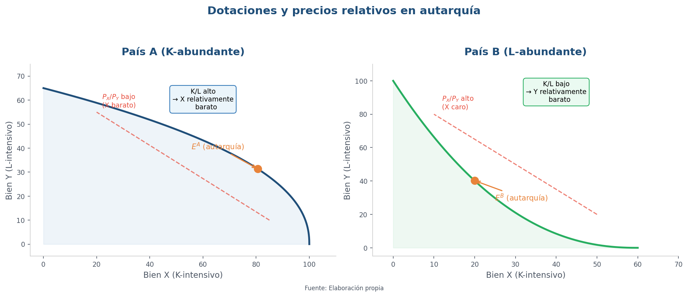
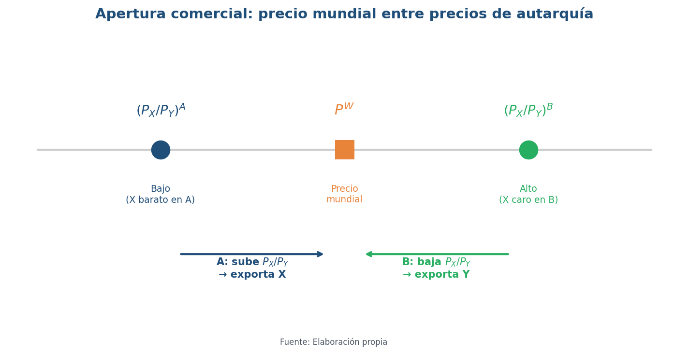
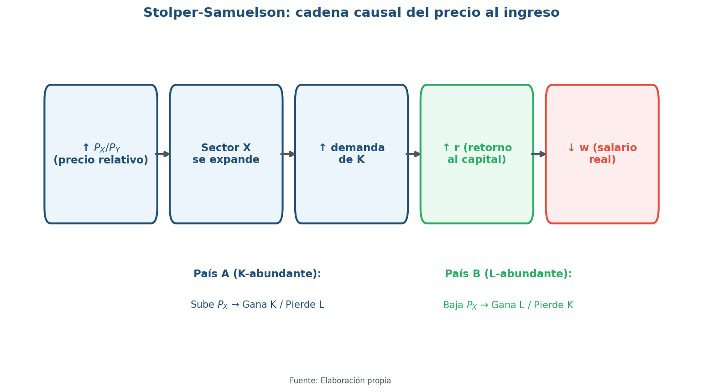
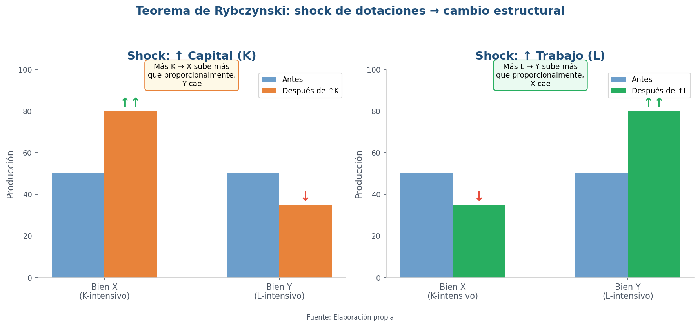
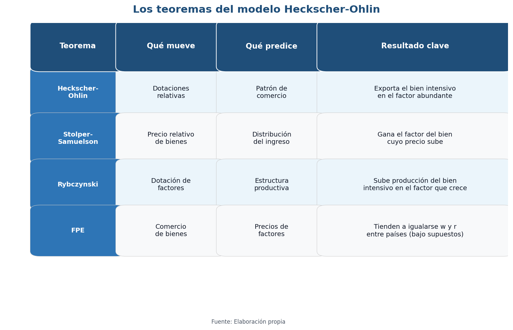
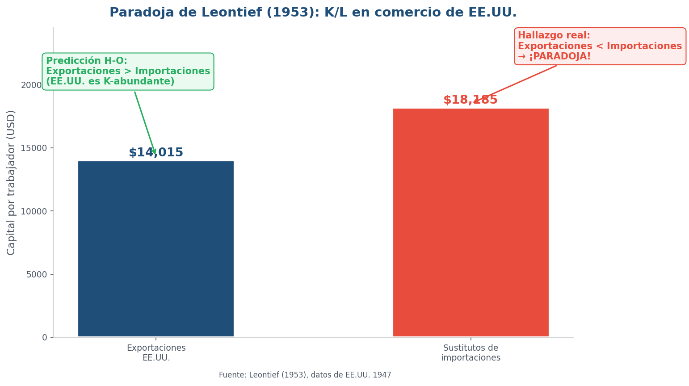

Heckscher-Ohlin
Dotaciones factoriales, especialización y conflicto distributivo
UMET - Licenciatura en Economía | 2026
Agenda
- De Ricardo a H-O: por qué necesitamos un modelo con factores
- El trío sueco-americano: Heckscher, Ohlin y Samuelson
- Modelo H-O: setup 2x2x2, dotaciones y precios relativos
- Apertura comercial: precio mundial y patrón de comercio
- Teoremas: Stolper-Samuelson, Rybczynski, FPE
- Evidencia: la Paradoja de Leontief y por qué "falla" H-O
- Factores específicos: corto plazo y conflicto sectorial
- Argentina: dotaciones, apertura y conflicto distributivo
De Ricardo a Heckscher-Ohlin: cuando el conflicto distributivo entra al modelo
- Ricardo (clases 3-4): comercio por diferencias de productividad/tecnología → ganancias agregadas
- Modelo neoclásico (clase 5): precios relativos, oferta y demanda relativa → marco general
- Hoy — Heckscher-Ohlin: comercio por dotaciones de factores (K/L, tierra, calificación)
- Gran novedad: el comercio cambia la distribución del ingreso (salarios vs rentas)
- Secuencia lógica: Dotaciones → costos relativos → precios relativos → patrón de comercio → distribución
Heckscher, Ohlin y Samuelson — El trío que armó el edificio H-O
- Eli Heckscher (Suecia, principios s. XX): la intuición — "un país exporta lo que usa intensivamente su factor abundante"
- Bertil Ohlin (alumno de Heckscher, Nobel 1977): convierte la intuición en teoría general de equilibrio — dotaciones → costos → precios → comercio. Fue político (líder del Partido Liberal sueco)
- Paul Samuelson (MIT, EE.UU., Nobel 1970): lo vuelve teorema demostrable. Con Stolper cristaliza el resultado "picante": apertura = ganadores y perdedores
- Frase para recordar: "Heckscher dice qué exportás. Ohlin dice cómo funciona. Samuelson dice por qué tu cuñado discute de comercio en los asados"
El modelo Heckscher-Ohlin: setup 2×2×2
Los supuestos que aíslan el mecanismo de dotaciones
- 2 países: A y B
- 2 bienes: \(X\) (capital-intensivo) e \(Y\) (trabajo-intensivo)
- 2 factores: Trabajo (\(L\)) y Capital (\(K\))
- Supuestos: tecnología igual, competencia perfecta, rendimientos constantes
- Factores móviles dentro del país, inmóviles entre países
- Preferencias iguales (para aislar el efecto dotaciones)
- Abundancia relativa: A tiene mayor \(K/L\) que B
- Intensidad factorial: \(X\) requiere mayor \(K/L\) que \(Y\)
Dotaciones → costos → precios relativos en autarquía

Fuente: Elaboración propia
- País A (K-abundante): \(K/L\) alto → costo relativo de \(X\) menor → \(P_X/P_Y\) bajo en autarquía
- País B (L-abundante): \(K/L\) bajo → costo relativo de \(Y\) menor → \(P_X/P_Y\) alto en autarquía
- Si \((P_X/P_Y)^A < (P_X/P_Y)^B\) → aparece incentivo a comerciar
- La "chispa" del comercio: precios relativos distintos por dotaciones distintas
Apertura comercial en H-O: precio mundial y patrón de comercio

Fuente: Elaboración propia
- En autarquía: \((P_X/P_Y)^A < (P_X/P_Y)^B\)
- Con comercio aparece \(P^W\) tal que \((P_X/P_Y)^A < P^W < (P_X/P_Y)^B\)
- País A (K-abundante): sube \(P_X/P_Y\) → produce más \(X\) → exporta X
- País B (L-abundante): baja \(P_X/P_Y\) → produce más \(Y\) → exporta Y
- Predicción central: cada país exporta el bien intensivo en su factor abundante
Teorema de Heckscher-Ohlin
- Un país exporta el bien que usa intensivamente su factor relativamente abundante
- e importa el bien que usa intensivamente su factor relativamente escaso
- El patrón de comercio sale de dotaciones + intensidades factoriales, no de tecnología
Teorema de Stolper-Samuelson
Cuando cambia el precio del bien, cambia el ingreso de los factores
- Supuesto: \(X\) es K-intensivo, \(Y\) es L-intensivo
- Con apertura, en país K-abundante (A): sube \(P_X/P_Y\)
- Resultado:
- ↑ retorno real del capital (\(r\)) — el factor usado intensivamente en \(X\)
- ↓ salario real del trabajo (\(w\)) — el otro factor
- En país L-abundante (B): ocurre lo inverso (↑ \(w\), ↓ \(r\))
- Traducción política: apertura comercial = ganadores y perdedores por factor
Stolper-Samuelson: del precio del bien al ingreso del factor

Fuente: Elaboración propia
- Cadena causal: ↑ \(P_X/P_Y\) → expansión sector \(X\) → ↑ demanda de \(K\) → ↑ \(r\) y ↓ \(w\)
- País A (K-abundante): sube \(P_X\) → gana K / pierde L
- País B (L-abundante): baja \(P_X\) → gana L / pierde K
- Ejemplo Argentina: apertura que favorece bienes tierra-intensivos (agro) → ↑ renta de la tierra, tensión sobre salarios industriales
- Si sabés qué precios cambian, podés anticipar quién apoya y quién resiste la apertura
Tadeusz Rybczynski (1923-1998)
- Economista polaco naturalizado inglés, London School of Economics
- Publica una nota cortísima en Economica (1955): "Factor Endowment and Relative Commodity Prices"
- Un paper, un teorema eterno: usa el box diagram de Stolper-Samuelson para mostrar qué pasa cuando cambian las dotaciones (no los precios)
- Contexto de posguerra: acumulación de capital, reconstrucción europea, migraciones → ¿cómo reconfiguran la estructura productiva?
- Después pasó al sector financiero (Lazard) — el "one-hit wonder" académico por excelencia
Teorema de Rybczynski: shock de dotaciones → cambio estructural

Fuente: Elaboración propia
- Con precios de bienes constantes (\(P_X/P_Y\) fijo):
- Si ↑ \(K\): producción de \(X\) sube más que proporcionalmente, producción de \(Y\) cae
- Si ↑ \(L\): producción de \(Y\) sube más que proporcionalmente, producción de \(X\) cae
- No es "crece todo un poco": cambia la composición de lo que producimos
- Útil para pensar desarrollo: inversión, migración, descubrimiento de recursos → reconfiguran estructura productiva
FPE: ¿el comercio iguala salarios y retornos?
El resultado más provocador del paquete H-O
- Con libre comercio: tienden a igualarse precios de bienes (\(P_X^A = P_X^B\))
- Si además: misma tecnología, mismos bienes producidos, competencia perfecta, sin costos de comercio
- Entonces: \(w^A \to w^B\) y \(r^A \to r^B\) — salarios y retornos tienden a igualarse entre países
- Intuición: precios de bienes → disciplinan costos → disciplinan precios de factores
- Warning: resultado extremo que depende de supuestos muy fuertes
- Utilidad pedagógica: sirve como benchmark para discutir qué fricciones impiden la igualación
Los tres teoremas en perspectiva

Fuente: Elaboración propia
- Stolper-Samuelson: shock de precios → cambio en distribución del ingreso
- Rybczynski: shock de dotaciones → cambio en estructura productiva
- FPE: comercio de bienes → convergencia de precios de factores (bajo supuestos fuertes)
- Los tres parten del mismo modelo 2×2×2 pero hacen experimentos mentales distintos
- Juntos arman un edificio coherente: dotaciones → precios → comercio → distribución
Wassily Leontief (1906-1999)
- Economista ruso-estadounidense, profesor en Harvard
- Creó el método de matrices insumo-producto (input-output): cómo cada sector depende de los demás
- Nobel de Economía 1973 por ese método y sus aplicaciones
- En 1953 publica un test empírico de H-O con datos de EE.UU. (1947)
- Método: calcular cuánto K y L está "embebido" en exportaciones vs importaciones
- Resultado: lo contrario de lo que predecía H-O → "Paradoja de Leontief"
La Paradoja de Leontief: cuando el test empírico no calza

Fuente: Leontief (1953), datos de EE.UU. 1947
- Predicción H-O: EE.UU. (K-abundante) → exporta bienes K-intensivos
- Hallazgo de Leontief: exportaciones de EE.UU. relativamente más L-intensivas que las importaciones
- Es una "paradoja" respecto de H-O, no un error de medición trivial
- Lectura: el mundo real tiene más dimensiones que 2×2×2
- No "mata" H-O: lo obliga a volverse más realista
Explicaciones de la Paradoja de Leontief y límites de H-O
- Trabajo no homogéneo: distinguir calificado vs no calificado (capital humano) — EE.UU. exportaba bienes intensivos en skills
- Tecnología distinta: productividad/innovación hace que Ricardo "vuelva" — no solo dotaciones
- Más de 2 factores: tierra, recursos naturales, energía, capacidad organizacional
- Protección y fricciones: aranceles, cuotas, costos de transporte, barreras no arancelarias distorsionan el patrón
- Problemas de medición: cómo medir capital, intensidad factorial "embebida", año base de los datos
- Conclusión: H-O funciona mejor como mecanismo (dotaciones → precios → comercio) que como predicción literal
Factores específicos: cuando el conflicto es por sector
¿Qué pasa en el corto plazo, cuando los factores no se mueven fácilmente?
- 2 bienes: \(X\) e \(Y\). 1 factor móvil: Trabajo (\(L\)). 2 factores específicos: \(K_X\) y \(K_Y\)
- Si ↑ \(P_X\):
- Gana \(K_X\) (el factor específico del sector que sube)
- Pierde \(K_Y\) (el factor atrapado en el sector que pierde)
- Trabajo (\(L\), móvil): efecto ambiguo — depende de la canasta de consumo
- En el corto plazo: coaliciones por sector (exportador vs import-competing), no solo por factor
- Diferencia clave con Stolper-Samuelson: horizonte temporal y movilidad de factores
Argentina: dotaciones, apertura y conflicto distributivo

Fuente: INDEC / Banco Mundial
- Lente H-O: Argentina abundante en recursos naturales/tierra → exporta bienes asociados (agro, energía)
- Lente Stolper-Samuelson: suba de precios de commodities → ↑ renta de la tierra, tensión sobre salarios
- Lente factores específicos: apertura puede golpear sectores industriales que no se reconvierten rápido
- Mediaciones argentinas: tipo de cambio, retenciones, restricción externa, instituciones laborales
- Preguntas para debate: ¿Qué grupos apoyan apertura? ¿Cambian ganadores entre corto y largo plazo?
¿Qué nos llevamos de esta clase?
- Mecanismo H-O: dotaciones → costos → precios relativos → comercio → distribución
- Resultado clave: el comercio tiene efectos distributivos (Stolper-Samuelson; factores específicos en el corto plazo)
- Rybczynski: cambios en dotaciones reconfiguran la estructura productiva, no todo crece parejo
- FPE: predicción extrema útil como benchmark; en la práctica no se cumple por fricciones
- Leontief: el modelo 2×2×2 no captura skills, tecnología, instituciones → H-O es base, no ley
- Próximo paso: si H-O no explica todo, ¿qué modelos capturan mejor el comercio moderno? → Nuevas teorías
Evaluación — Unidad 2
Teorías clásicas y neoclásicas del comercio internacional
- Evaluación multiple choice en la plataforma (5 preguntas)
- Cubre Clases 3 a 6: mercantilistas, Smith, Ricardo, modelo neoclásico, H-O
- Algunas preguntas requieren procesar datos (no es solo memorizar)
- Para promocionar: todas las evaluaciones con 7 o más
- Se pueden recuperar las evaluaciones que salieron mal
Próxima clase: Rendimientos crecientes y competencia imperfecta
Unidad 3 — Nuevas teorías del comercio
- ¿Por qué países similares comercian entre sí? (comercio Norte-Norte)
- Krugman: economías de escala + competencia monopolística → comercio por variedades
- El comercio ya no es solo entre países "distintos" (H-O) sino también entre países "parecidos"
- Un modelo que explica por qué Alemania le vende autos a Francia y Francia le vende autos a Alemania
Material complementario
- 📺 MRU — "The Heckscher-Ohlin Theorem" (Marginal Revolution University, YouTube) — 10 min, inglés con subtítulos. Explicación visual clara del modelo H-O. Ideal como repaso rápido
- 🎬 "Juego sin límites: La mentira del libre comercio" (DW Documental, YouTube) — 42 min, español. Casos concretos de ganadores y perdedores del comercio (cebollas en Camerún, azulejos en Europa). Muy usado en universidades latinoamericanas
- 🎬 "American Factory" (Netflix, 2019, Oscar al Mejor Documental) — 110 min, inglés/mandarín con subtítulos. Fábrica china en planta ex-GM en Ohio: capital vs trabajo, tensiones distributivas reales
- 🎬 "Globalización: ganadores y perdedores" (DW Documental, YouTube) — 42 min cada parte. Agricultores pro-Trump, la Ruta de la Seda, Perú: conflicto distributivo global
- 🎧 "Does Free Trade Benefit Everyone? Stolper-Samuelson" (Economics Explored, Podcast EP272) — 35 min, inglés. El único recurso que trata S-S como tema central con ejemplos actuales
Lecturas
- Obligatoria: Lugones et al. — Teorías del Comercio Internacional, Cap. 1, sección 1.2 (pp. 25-30): "Los neoclásicos (Heckscher-Ohlin): diferencias en la dotación de factores"
- Obligatoria: Krugman, Obstfeld & Melitz (9a ed.) — Cap. 4: "Factores específicos y distribución de la renta" y Cap. 5: "Recursos y comercio: el modelo Heckscher-Ohlin"
- Complementaria: Steinberg, F. (2004) — La nueva teoría del comercio internacional y la política comercial estratégica, ICEI/UAM (caps. sobre teoría clásica)
- Complementaria: Leontief, W. (1953) — "Domestic Production and Foreign Trade: The American Capital Position Re-Examined", Proceedings of the American Philosophical Society (en inglés, 10 páginas). El paper original de la Paradoja de Leontief
¿Preguntas?
Economía Internacional — UMET 2026